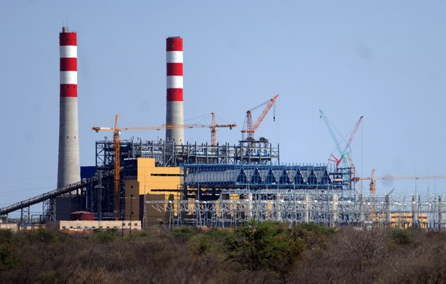
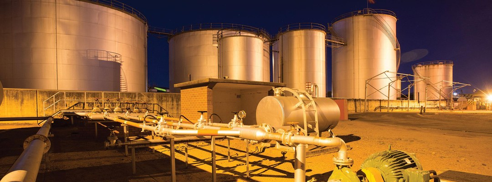
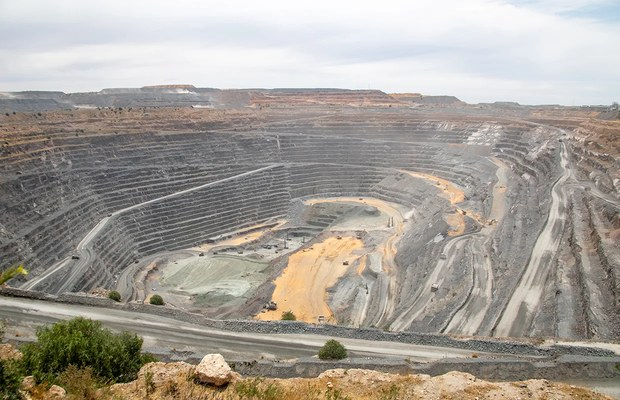

Risk Management · Engineering · Advisory
Transform Risk Into Resilience.
Empowering businesses to thrive in volatile, uncertain and complex environments through integrated risk management and engineering solutions.
Hero’s Peak (Pty) Ltd, trading as Risk Engineers Botswana, is a 100% citizen-owned independent risk management and engineering services provider established in 2018.
Learn About REBA focused suite of risk management and engineering services built around practical, risk-aware decision-making.
Enterprise-wide assessments, risk response strategies, frameworks and policies.
02Emergency response, crisis communication, disaster recovery and business continuity planning.
03Risk surveys, loss prevention, risk profiling and risk-financing support.
04Materiality, ESG risks and opportunities, frameworks and reporting standards.
05Practical programmes that strengthen risk capability and culture.
06Risk models and dashboards linking strategy, performance, appetite and scenarios.
Selected assignments across utilities, energy and mining, using the project material supplied by REB.

Annual strategic risk impact assessments, executive risk discussions, ERM workshops, risk modelling and insurance advisory.

Comprehensive Business Continuity Management framework, loss-scenario assessment, BIA, continuity plans and simulations.
Multi-national risk engineering and insurance tender followed by continuous risk improvement and business impact analysis.

Orapa Cut 3 project risk management, risk-register validation, critical controls and bow-tie analysis for priority events.